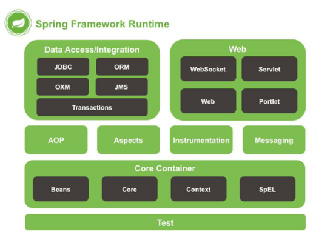
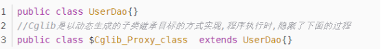

1.Spring Framework 模块

1.1 spring核心容器
该层基本上是 Spring Framework 的核心。它包含以下模块：
- Spring Core
- Spring Bean
- SpEl (Spring Expression language)
- Spring Context
1.2数据访问/集成
该层提供与数据库交互的支持。它包含以下模块：
JDBC (Java DataBase Connectivity)
ORM (Object Reationa Mapping)
OXM (Object XMl Mappers)
JMS (Java Messaging Service)
Transaction
1.3 web
该层提供了创建 Web 应用程序的支持。它包含以下模块：
Web
Web – Servlet
Web – Socket
Web – Portlet
1.4AOP
该层支持面向切面编程
1.5Instrumentation
该层为类检测和类加载器实现提供支持。
1.6Test
该层为使用 JUnit 和 TestNG 进行测试提供支持。
1.7 Messaging
该模块为 STOMP 提供支持。它还支持注解编程模型，该模型用于从 WebSocket 客户端路由和处理 STOMP 消息。
1.8 Aspect
该模块为与 AspectJ 的集成提供支持。
2. IOC
Spring拥有两大特性：IoC和AOP。
Spring核心容器的主要组件是Bean工厂（BeanFactory），Bean工厂使用控制反转（IoC）模式来降低程序代码之间的耦合度，并提供了面向切面编程（AOP）的实现。
2.1什么是IOC/DI
IOC(Inversion of Control)控制反转：所谓控制反转，就是把原先我们代码里面需要实现的对象创建、依赖的代码，反转给容器来帮忙实现。那么必然的我们需要创建一个容器，同时需要一种描述来让容器知道需要创建的对象与对象的关系。这个描述最具体表现就是我们可配置的文件。
DI(Dependency Injection)依赖注入：就是指对象是被动接受依赖类而不是自己主动去找，换句话说就是指对象不是从容器中查找它依赖的类，而是在容器实例化对象的时候主动将它依赖的类注入给它。Spring依赖注入的方式主要有四个，基于注解注入方式、set注入方式、构造器注入方式、静态工厂注入方式。推荐使用基于注解注入方式，配置较少，比较方便。
- IoC容器：具有依赖注入功能的容器，可以创建对象的容器。IoC容器负责实例化、定位、配置应用程序中的对象并建立这些对象之间的依赖。IoC的主要实现方式有两种：依赖查找、依赖注入。依赖注入是一种更可取的方式,以来查找已经配抛弃
那么依赖查找和依赖注入有什么区别呢？
依赖查找，主要是容器为组件提供一个回调接口和上下文环境。这样一来，组件就必须自己使用容器提供的API来查找资源和协作对象，控制反转仅体现在那些回调方法上，容器调用这些回调方法，从而应用代码获取到资源。
依赖注入，组件不做定位查询，只提供标准的Java方法让容器去决定依赖关系。容器全权负责组件的装配，把符合依赖关系的对象通过Java Bean属性或构造方法传递给需要的对象。
2.2 spring IOC
控制反转，简单点说，就是创建对象的控制权，由原本自己代码new被反转到了Spring框架上
Spring 的 IoC 设计支持以下功能：·
依赖注入·
依赖检查·
自动装配
支持集合
指定初始化方法和销毁方法
支持回调某些方法（但是需要实现 Spring 接口，略有侵入）
其中，最重要的就是依赖注入，从 XML 的配置上说， 即 ref 标签。对应 Spring RuntimeBeanReference 对象。
对于 IoC 来说，最重要的就是容器。容器管理着 Bean 的生命周期，控制着 Bean 的依赖注入。
那么， Spring 如何设计容器的呢？
Spring 作者 Rod Johnson 设计了两个接口用以表示容器：BeanFactory、ApplicationContext
l BeanFactory 粗暴简单，可以理解为就是个 HashMap，Key 是 BeanName，Value 是 Bean 实例。通常只提供注册（put），获取（get）这两个功能。我们可以称之为 “低级容器”。
l ApplicationContext 可以称之为 “高级容器”。因为他比 BeanFactory 多了更多的功能。他继承了多个接口。因此具备了更多的功能。例如资源的获取，支持多种消息（例如 JSP tag 的支持），对 BeanFactory 多了工具级别的支持等待。所以你看他的名字，已经不是 BeanFactory 之类的工厂了，而是 “应用上下文”， 代表着整个大容器的所有功能。该接口的一个实现类ConfigurableApplicationContext定义了一个 refresh 方法，此方法是所有阅读 Spring 源码的人的最熟悉的方法，用于刷新整个容器，即重新加载/刷新所有的 bean。
为了更直观的展示 “低级容器” 和 “高级容器” 的关系，我这里通过常用的 ClassPathXmlApplicationContext 类（我们常用的还有ClassPathweblApplicationContext ），来展示整个容器的层级 UML 关系。
最上面的 BeanFactory 知道吧？我就不讲了。
下面的 3 个绿色的，都是功能扩展接口，这里就不展开讲。
看下面的隶属 ApplicationContext 粉红色的 “高级容器”，依赖着 “低级容器”，这里说的是依赖，不是继承哦。他依赖着 “低级容器” 的 getBean 功能。而高级容器有更多的功能：支持不同的信息源头，可以访问文件资源，支持应用事件（Observer 模式）。
通常用户看到的就是 “高级容器”。 但 BeanFactory 也非常够用啦！
左边灰色区域的是 “低级容器”， 只负载加载 Bean，获取 Bean。容器其他的高级功能是没有的。例如上图画的 refresh 刷新 Bean 工厂所有配置。生命周期事件回调等。
好，解释了低级容器和高级容器，我们可以看看一个 IoC 启动过程是什么样子的。说白了，就是 ClassPathXmlApplicationContext 这个类，在启动时，都做了啥。（由于我这是 interface21 的代码，肯定和你的 Spring 4.x 系列不同）。
下图是 ClassPathXmlApplicationContext 的构造过程，实际就是 Spring IoC 的初始化过程。
这里再用文字来描述这个过程：
- 用户构造 ClassPathXmlApplicationContext（简称 CPAC）
- CPAC 首先访问了 “抽象高级容器” 的 final 的 refresh 方法，这个方法是模板方法。所以要回调子类（低级容器）的 refreshBeanFactory 方法，这个方法的作用是使用低级容器加载所有 BeanDefinition 和 Properties 到容器中。
- 低级容器加载成功后，高级容器开始处理一些回调，例如 Bean 后置处理器。回调 setBeanFactory 方法。或者注册监听器等，发布事件，实例化单例 Bean 等等功能，这些功能，随着 Spring 的不断升级，功能越来越多，很多人在这里迷失了方向 ：）。
简单说就是：
- 低级容器 加载配置文件（从 XML，数据库，Applet），并解析成 BeanDefinition 到低级容器中。
- 加载成功后，高级容器启动高级功能，例如接口回调，监听器，自动实例化单例，发布事件等等功能。
所以，一定要把 “低级容器” 和“高级容器” 的区别弄清楚。不能一叶障目不见泰山。
好，当我们创建好容器，就会使用 getBean 方法，获取 Bean，而 getBean 的流程如下：
从图中可以看出，getBean 的操作都是在低级容器里操作的。其中有个递归操作，这个是什么意思呢？
假设 ： 当 Bean_A 依赖着 Bean_B，而这个 Bean_A 在加载的时候，其配置的 ref = “Bean_B” 在解析的时候只是一个占位符，被放入了 Bean_A 的属性集合中，当调用 getBean 时，需要真正 Bean_B 注入到 Bean_A 内部时，就需要从容器中获取这个 Bean_B，因此产生了递归。
为什么不是在加载的时候，就直接注入呢？因为加载的顺序不同，很可能 Bean_A 依赖的 Bean_B 还没有加载好，也就无法从容器中获取，你不能要求用户把 Bean 的加载顺序排列好，这是不人道的。
所以，Spring 将getBean分为了 2 个步骤：
- 加载所有的 Bean 配置成 BeanDefinition 到容器中，如果 Bean 有依赖关系，则使用占位符暂时代替。
- 然后，在调用 getBean 的时候，进行真正的依赖注入，即如果碰到了属性是 ref 的（占位符），那么就从容器里获取这个 Bean，然后注入到实例中 —— 称之为依赖注入。
可以看到，依赖注入实际上，只需要 “低级容器” 就可以实现。
这就是 IoC。
所以 ApplicationContext refresh 方法里面的操作不只是 IoC，是高级容器的所有功能（包括 IoC），IoC 的功能在低级容器里就可以实现。
2.3 总结
说了这么多，不知道你有没有理解Spring IoC？ 这里小结一下：IoC 在 Spring 里，只需要低级容器就可以实现，2 个步骤：
1) 加载配置文件，解析成 BeanDefinition 放在 Map 里。
2) 调用 getBean 的时候，从 BeanDefinition 所属的 Map 里，拿出 Class 对象进行实例化，同时，如果有依赖关系，将递归调用 getBean 方法 —— 完成依赖注入。
上面就是 Spring 低级容器（BeanFactory）的 IoC。
至于高级容器 ApplicationContext，他包含了低级容器的功能，当他执行 refresh 模板方法的时候，将刷新整个容器的 Bean。同时其作为高级容器，包含了太多的功能。一句话，他不仅仅是 IoC。他支持不同信息源头，支持 BeanFactory 工具类，支持层级容器，支持访问文件资源，支持事件发布通知，支持接口回调等等。
3. 面向切面编程AOP
AOP的定义：面向切面编程，核心原理是使用动态代理模式在方法执行前后或出现异常时加入相关逻辑。
- AOP是基于动态代理模式。
- AOP是方法级别的（要测试的方法不能为static修饰，因为接口中不能存在静态方法，编译就会报错）。
- AOP可以分离业务代码和关注点代码（重复代码），在执行业务代码时，动态的注入关注点代码。切面就是关注点代码形成的类
我们知道java是一个面向对象(OOP)的语言，但它有一些弊端,比如当我们需要为多个不具有继承关系的对象引入一个公共行为，只能在在每个对象里引用公共行为，这样做不便于维护，而且有大量重复代码。AOP的出现弥补了OOP的这点不足。
面向切面编程（AOP）就是纵向的编程。比如业务A和业务B现在需要一个相同的操作，传统方法我们可能需要在A、B中都加入相关操作代码，而应用AOP就可以只写一遍代码，A、B共用这段代码。并且，当A、B需要增加新的操作时，可以在不改动原代码的情况下，灵活添加新的业务逻辑实现。
在实际开发中，比如商品查询、促销查询等业务，都需要记录日志、异常处理等操作，AOP把所有共用代码都剥离出来，单独放置到某个类中进行集中管理，在具体运行时，由容器进行动态织入这些公共代码。
AOP主要一般应用于签名验签、参数校验、日志记录、事务控制、权限控制、性能统计、异常处理等。
3.1 AOP名词
切面（Aspect）：共有功能的实现。如日志切面、权限切面、验签切面等。在实际开发中通常是一个存放共有功能实现的标准Java类。当Java类使用了@Aspect注解修饰时，就能被AOP容器识别为切面。
通知（Advice）：切面的具体实现。就是要给目标对象织入的事情。以目标方法为参照点，根据放置的地方不同，可分为前置通知（Before）、后置通知（AfterReturning）、异常通知（AfterThrowing）、最终通知（After）与环绕通知（Around）5种。在实际开发中通常是切面类中的一个方法，具体属于哪类通知，通过方法上的注解区分。
连接点（JoinPoint）：程序在运行过程中能够插入切面的地点。例如，方法调用、异常抛出等。Spring只支持方法级的连接点。一个类的所有方法前、后、抛出异常时等都是连接点。
- 切入点（Pointcut）：用于定义通知应该切入到哪些连接点上。不同的通知通常需要切入到不同的连接点上，这种精准的匹配是由切入点的正则表达式来定义的。
比如，在上面所说的连接点的基础上，来定义切入点。我们有一个类，类里有10个方法，那就产生了几十个连接点。但是我们并不想在所有方法上都织入通知，我们只想让其中的几个方法，在调用之前检验下入参是否合法，那么就用切点来定义这几个方法，让切点来筛选连接点，选中我们想要的方法。切入点就是来定义哪些类里面的哪些方法会得到通知。
目标对象（Target）：那些即将切入切面的对象，也就是那些被通知的对象。这些对象专注业务本身的逻辑，所有的共有功能等待AOP容器的切入。
代理对象（Proxy）：将通知应用到目标对象之后被动态创建的对象。可以简单地理解为，代理对象的功能等于目标对象本身业务逻辑加上共有功能。代理对象对于使用者而言是透明的，是程序运行过程中的产物。目标对象被织入共有功能后产生的对象。
织入（Weaving）：将切面应用到目标对象从而创建一个新的代理对象的过程。这个过程可以发生在编译时、类加载时、运行时。Spring是在运行时完成织入，运行时织入通过Java语言的反射机制与动态代理机制来动态实现。
3.2 pointcut用法
修饰符匹配 modifier-pattern? 例：public private
返回值匹配 ret-type-pattern 可以用 * 表示任意返回值
类路径匹配 declaring-type-pattern? 全路径的类名
方法名匹配 name-pattern 可以指定方法名或者用 * 表示所有方法；set* 表示所有以set开头的方法
参数匹配 (param-pattern) 可以指定具体的参数类型，多个参数用“,”分隔；可以用 * 表示匹配任意类型的参数；可以用 (..) 表示零个或多个任意参数
异常类型匹配throws-pattern? 例：throws Exception
其中后面跟着 ? 表示可选项
3.3 一个例子
以 Spring Boot入门：使用AOP实现拦截器 中的AOP为例
SignAop类使用了@Aspect注解，则该类可以被AOP容器识别为切面
@Pointcut声明一个切入点，范围为controller包下所有的类的所有方法。注：作为切入点签名的方法必须返回void类型
doBefore()方法使用@Before(“signAop()”)注解，表示前置通知（在某连接点之前执行的通知），但这个通知不能阻止连接点之前的执行流程，除非它抛出一个异常。
doAfterReturning()方法使用@AfterReturning(value = “signAop()”, returning = “params”)注解，表示后置通知（在某连接点正常完成后执行的通知），通常在一个匹配的方法返回的时候执行。
实际运行时，在进入controller包下所有方法前，都会进入doBefore()方法，在controller包下方法执行完成后，都会进入doAfterReturning()方法。
3.4 动态代理/静待代理
AOP有两种实现方式：静态代理、动态代理
静态代理 - 指使用 AOP 框架提供的命令进行编译，从而在编译阶段就可生成 AOP 代理类，因此也称为编译时增强；
编译时编织（特殊编译器实现）
类加载时编织（特殊的类加载器实现）。
动态代理 - 在运行时在内存中“临时”生成 AOP 动态代理类，因此也被称为运行时增强。
JDK 动态代理
CGLIB
3.4.1 静态代理
静态代理模式：静态代理说白了就是在程序运行前就已经存在代理类的字节码文件，代理类和原始类的关系在运行前就已经确定。
测试结果
静态代理虽然保证了业务类只需关注逻辑本身，代理对象的一个接口只服务于一种类型的对象，如果要代理的方法很多，势必要为每一种方法都进行代理。再者，如果增加一个方法，除了实现类需要实现这个方法外，所有的代理类也要实现此方法。增加了代码的维护成本。那么要如何解决呢?答案是使用动态代理。
3.4.2 动态代理
动态代理模式：动态代理类的源码是在程序运行期间通过JVM反射等机制动态生成，代理类和委托类的关系是运行时才确定的。实例如下:
3.4.2.1 JDK动态代理
测试结果如下：
在运行测试类中创建测试类对象代码中
其实是jdk动态生成了一个类去实现接口,隐藏了这个过程:

使用jdk生成的动态代理的前提是目标类必须有实现的接口。
3.4.2.2 CGLB动态代理
使用jdk生成的动态代理的前提是目标类必须有实现的接口。但这里又引入一个问题,如果某个类没有实现接口,就不能使用jdk动态代理,所以Cglib代理就是解决这个问题的。
Cglib是以动态生成的子类继承目标的方式实现，在运行期动态的在内存中构建一个子类，如下:

Cglib使用的前提是目标类不能为final修饰。因为final修饰的类不能被继承。
首先，导入 CGLIB 的 Maven 依赖。
1 | <dependency> |
Spring AOP 的 org.springframework.cglib 包中包含了 CGLIB 的相关代码(和 CGLIB Maven 依赖中代码的一样，版本可能不同)，所以也可以选择导入 Spring AOP 的 Maven 依赖。
1 | <dependency> |
然后，定义一个 Service 类，其有两个方法并且其中一个方法用 final 来修饰。
1 | 1.public class Service { |
接下来，定义一个 MethodInterceptor 的实现类。
1 | public class CglibDynamicProxy implements MethodInterceptor { |
测试
1 | public class Client { |
测试结果如下所示：
原理
https://www.jianshu.com/p/7700a48811e0
4. spring原理概述
- 用户发送请求至前端控制器DispatcherServlet(也叫中央处理器).
- DispatcherServlet调用HandlerMappering处理器映射器，处理器映射器找到具体的处理器（可以根据xml配置、注解进行查找），生成处理器对象及处理器拦截器（如果有则生成）一并返回给DispatcherServlet.
- DispatcherServlet调用HandlerAdapter处理器适配器。
- HandlerAdapter经过适配调用具体的处理器（Controller,也叫后端控制器）。
- Controller执行完成返回ModelAndView.
- HandlerAdapter将controller执行结果ModelAndView返回给DispatcherServlet.
- DisPatcherServlet将ModelAndView传给ViewReslover视图解析器。
- ViewReslover解析后返回具体View.
- DispatcherServlet根据View进行渲染视图（即将模型数据填充至视图中）。
- DispatcherServlet响应用户。